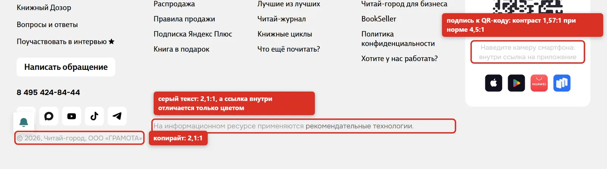
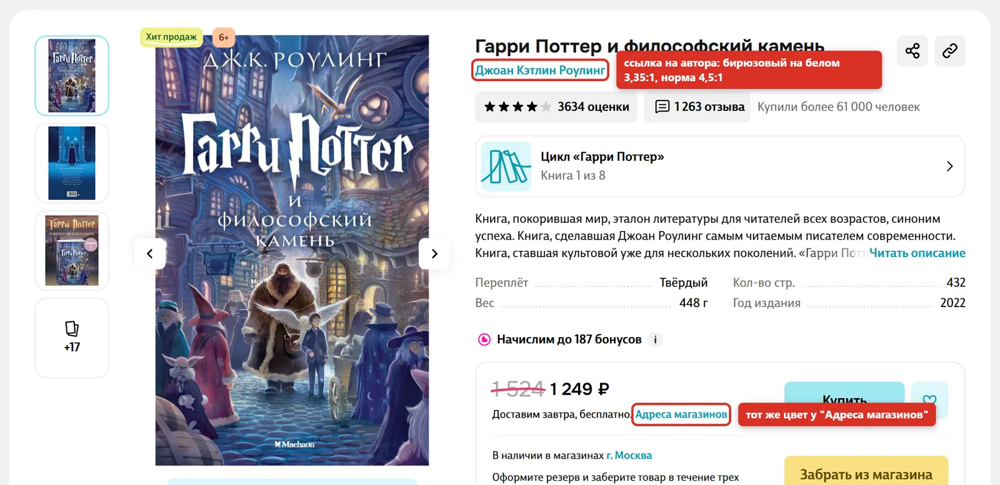
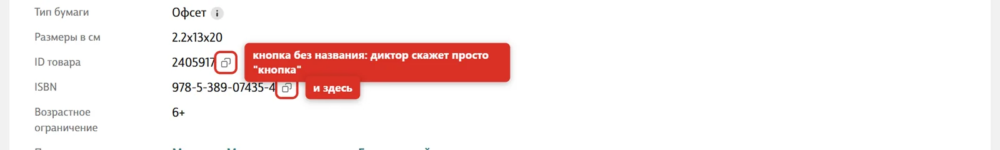
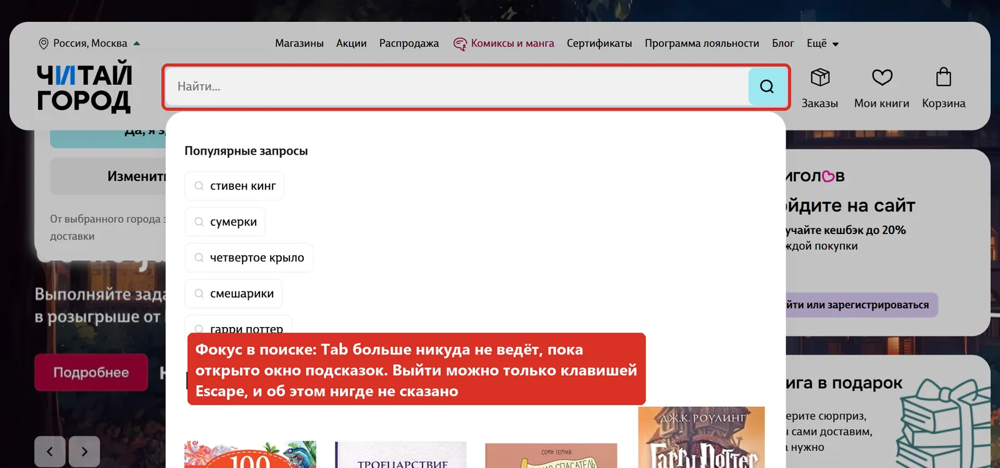
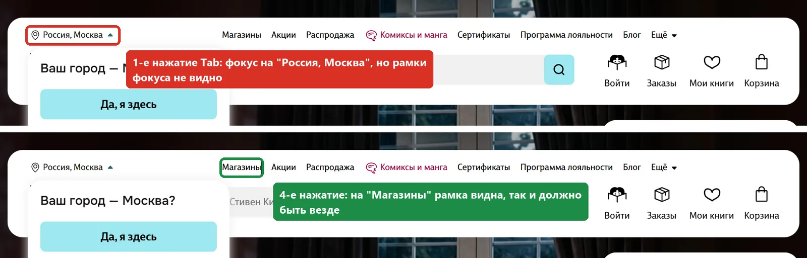
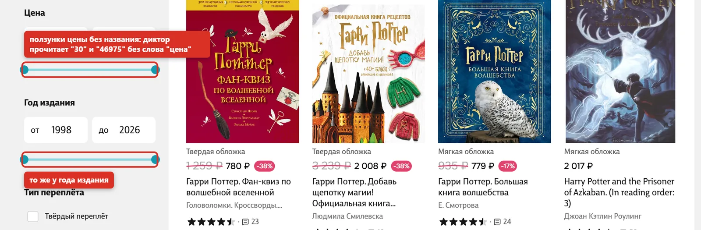
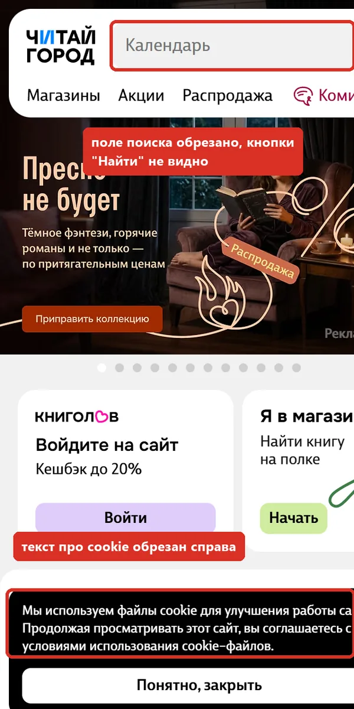

Доступность сайта ("Читай-город")
Что проверяла: главную, результаты поиска, карточку книги и корзину. Сможет ли ими пользоваться человек со слабым зрением, человек, который управляет сайтом только с клавиатуры, и незрячий человек с экранным диктором.
Как проверяла: автоматически инструментом axe-core по правилам WCAG 2.1 уровней A и AA, каждую находку перепроверила. Потом вручную: прошла страницы клавишей Tab, проверила видимость фокуса, заголовки, области страницы и вид на экране шириной 320 px.
Почему это важно: в России требования доступности сайтов описаны в ГОСТ Р 52872-2019, он построен на WCAG 2.1. А у книжного магазина много покупателей, которые плохо видят.
- WCAG 2.1
- axe-core
- Проверка с клавиатуры
- Контраст
- ARIA
4
страницы проверено144
элемента с нарушениями нашёл axe11
находок после перепроверки5
из них нашла только вручнуюСводка
| № | Находка | Важность | Критерий WCAG | Кто нашёл |
|---|---|---|---|---|
| 1 | На телефоне запрещено увеличивать страницу | Высокая | 1.4.4 Изменение размера текста | axe |
| 2 | Текст с низким контрастом: 100 мест на 4 страницах | Высокая | 1.4.3 Контраст | axe, перепроверено расчётом |
| 3 | Кнопки и ссылки без названия | Высокая | 4.1.2 Название, роль, значение | axe, перепроверено вручную |
| 4 | Tab застревает в поле поиска | Средняя | 2.1.2 Без ловушки для клавиатуры | вручную |
| 5 | Не видно фокуса на выборе города | Средняя | 2.4.7 Видимый фокус | вручную |
| 6 | Ползунки цены и года без названия | Средняя | 4.1.2 Название, роль, значение | axe |
| 7 | На узком экране страница не помещается | Средняя | 1.4.10 Перестройка контента | вручную |
| 8 | Ссылка отличается от текста только цветом | Низкая | 1.4.1 Использование цвета | axe |
| 9 | Ошибки в разметке для экранных дикторов | Низкая | 4.1.2 Название, роль, значение | axe |
| 10 | Нет быстрого перехода к содержимому | Низкая | 2.4.1 Пропуск блоков | вручную |
| 11 | Главный заголовок главной страницы это название полки | Низкая | 1.3.1 Структура | вручную |
Находки
#1 На телефоне запрещено увеличивать страницу
Что не так
В коде страницы стоит meta viewport с maximum-scale=1. Это запрет на увеличение жестом. Часть браузеров, например Safari на iPhone, запрет игнорирует, в остальных он работает.
Кому мешает
Человек с плохим зрением не может растянуть мелкий текст пальцами. Для книжного магазина это заметная часть покупателей.
Что предлагаю
Убрать maximum-scale=1 из meta viewport, оставить width=device-width, initial-scale=1.
<meta name="viewport" content="width=device-width, initial-scale=1, maximum-scale=1">
#2 Текст с низким контрастом: 100 мест на 4 страницах
Что не так
Подпись к QR-коду 1,57:1, серый текст подвала и счётчики вкладок поиска 2,1:1, фирменный бирюзовый #129aaf на белом 3,35:1 (ссылка на автора, "Адреса магазинов", выбор города), серый #737373 на светло-сером фоне 4,19:1. Норма для обычного текста 4,5:1.
Кому мешает
Светлый текст плохо читается людям со слабым зрением, пожилым и всем, кто смотрит на телефон на улице.
Что предлагаю
Затемнить цвета совсем немного: серый #6e6e6e вместо #737373 даёт 4,51:1, бирюзовый #0f8293 вместо #129aaf даёт 4,53:1. Самый светлый серый #a8a8a8 и #cecece заменить на #6e6e6e.




#3 Кнопки и ссылки без названия
Что не так
Нет названия у кнопок "скопировать ID товара" и "скопировать ISBN", "поделиться", у крестика очистки поиска, у логотипа в закреплённой шапке, у значка "Хит продаж" и у ссылки-картинки на полке бестселлеров.
Кому мешает
Экранный диктор прочитает просто "кнопка" или "ссылка". Незрячий человек не узнает, что она делает, пока не нажмёт.
Что предлагаю
Добавить aria-label: "Скопировать ISBN", "Поделиться", "Очистить поиск", "Читай-город, на главную".


#4 Tab застревает в поле поиска
Что не так
Когда фокус попадает в поиск, открывается окно "Популярные запросы", и клавиша Tab больше никуда не ведёт: 19 нажатий подряд фокус оставался в поле. Выйти можно клавишей Escape, после неё следующий Tab идёт на "Найти", "Заказы" и "Корзину". Но про Escape нигде не сказано.
Кому мешает
Человек, который управляет сайтом только с клавиатуры, упирается в поиск и не может дойти до корзины и товаров обычным способом.
Что предлагаю
Пускать Tab в список подсказок и дальше по странице, закрывать окно, когда фокус уходит из поиска.


#5 Не видно фокуса на выборе города
Что не так
Первое, на что попадает Tab, это "Россия, Москва", и рамки фокуса там нет (outline: none). У пунктов меню рамка есть.
Кому мешает
На первом же шаге человек с клавиатурой не понимает, где он находится на странице.
Что предлагаю
Вернуть рамку фокуса кнопке выбора города, лучше единый стиль :focus-visible для всех элементов.


#6 Ползунки цены и года без названия
Что не так
Ползунки фильтров цены и года издания доступны с клавиатуры, но названия у них нет.
Кому мешает
Диктор прочитает "ползунок, 30" или "ползунок, 2026" без слов "цена от" или "год до".
Что предлагаю
Добавить aria-label: "Цена от", "Цена до", "Год издания от", "Год издания до".


#7 На узком экране страница не помещается
Что не так
При ширине экрана 320 px страница шире экрана на 40 px: обрезаны поле поиска с кнопкой "Найти" и текст про cookie. Так страница выглядит на маленьком телефоне или на компьютере при увеличении 400%.
Кому мешает
Человек, который увеличивает страницу, должен листать её только вниз, а не ещё и вбок.
Что предлагаю
Дать полю поиска сжиматься по ширине экрана, переносить текст баннера.


#8 Ссылка отличается от текста только цветом
Что не так
"рекомендательные технологии" в подвале: ссылка без подчёркивания, а по цвету от соседнего текста отличается на 1,99:1 при норме 3:1.
Кому мешает
Человек, который плохо различает цвета, не поймёт, что это ссылка.
Что предлагаю
Подчеркнуть ссылки внутри текста.
#9 Ошибки в разметке для экранных дикторов
Что не так
У окна выбора города роль role="popup", такой роли не существует. У меню "Ещё" и ещё одного выпадающего списка в шапке атрибут aria-expanded стоит на обычном div без роли кнопки.
Кому мешает
Диктор может не сказать, что это кнопка и что она открывает меню.
Что предлагаю
Для окна role="dialog", для переключателей настоящий button с aria-expanded.
#10 Нет быстрого перехода к содержимому
Что не так
Нет ссылки "Перейти к основному содержимому", на главной нет области main. Чтобы с клавиатуры дойти до товаров, нужно пройти город, 7 пунктов меню, каталог и поиск.
Кому мешает
На каждой странице одно и то же: десяток нажатий только чтобы пройти шапку.
Что предлагаю
Первой ссылкой на странице сделать "Перейти к содержимому", обернуть основную часть в main.
#11 Главный заголовок главной страницы это название полки
Что не так
Заголовок первого уровня (H1) на главной это "Новинки", название одной из полок с книгами.
Кому мешает
Диктор и поисковик по H1 понимают, о чём страница. На карточке книги H1 правильный: название книги.
Что предлагаю
Сделать H1 главной про магазин, а "Новинки" перевести в H2. Это заодно полезно для SEO.
Что сделано хорошо
- Язык страницы указан (lang="ru"): диктор читает текст с русским произношением.
- У обложки книги понятный alt: "Книга Гарри Поттер и философский камень (Джоан Кэтлин Роулинг)".
- У значков в шапке есть подписи текстом: "Заказы", "Мои книги", "Корзина".
- У пунктов меню видна рамка фокуса.
- Escape закрывает окно подсказок поиска.
- На карточке книги правильная структура заголовков: H1 название, ниже H2 разделы.
Автоматическая проверка по страницам
| Страница | Правил пройдено | Правил нарушено | Элементов с нарушениями |
|---|---|---|---|
| Главная | 25 | 6 | 12 |
| Поиск | 26 | 8 | 85 |
| Карточка книги | 24 | 8 | 32 |
| Корзина | 24 | 6 | 15 |